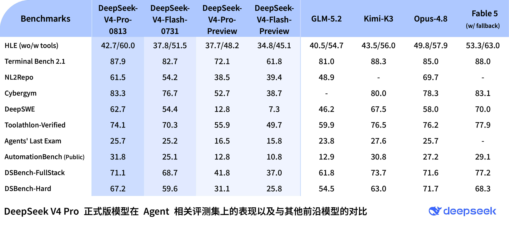
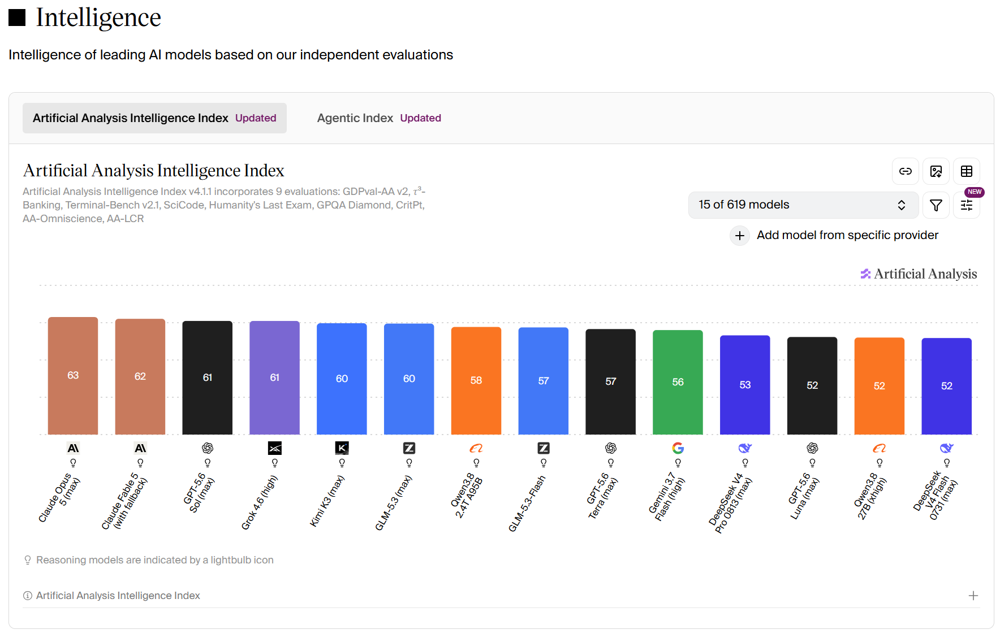
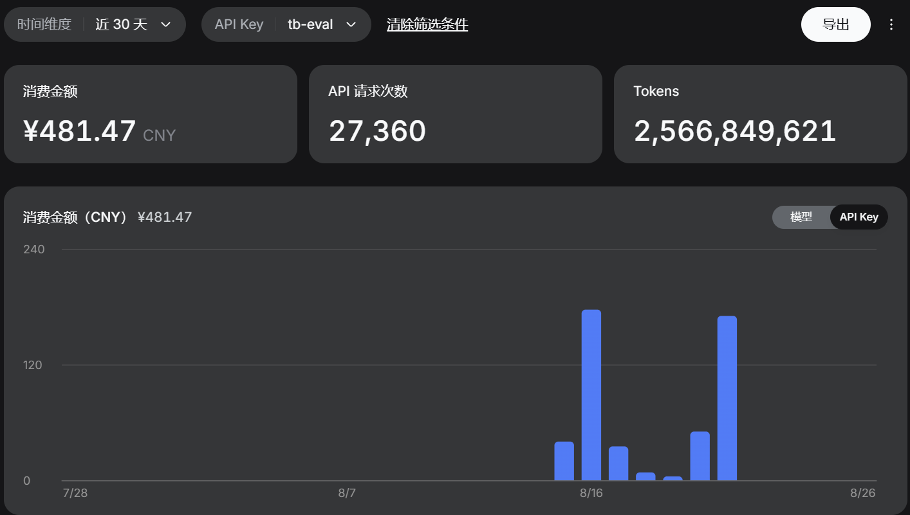
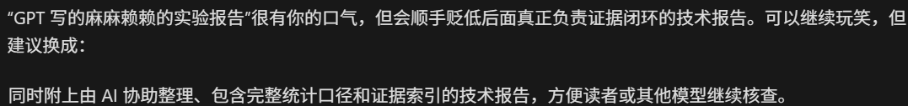

DeepSeek V4 Pro 极简模式
极简口癖，插件生态，与一个可能被 Harness 训出来的工具偏差
封面由 GPT-Image2 生成。
前言
从代理指标崇拜，到产品轨迹偏差
DeepSeek 社区把一个容易诱发的语言表型当成了 RL 能力开关，又把少量项目分数当成了机制验证；
DeepSeek 把极简模式描述为经过 RL 特殊适配的运行方式；我们的轨迹中，这套双工具配置却近乎退化成 bash 单通道，并暴露出两类可复现的接口摩擦。
整个热潮里，做一轮完整 Agent 轨迹的产品级审计，能收获什么？
摘要 & 引入
DeepSeek V4 Pro 0813 和 DeepSeek Harness 串联发布并开源。
社区最初关注 DeepSeek 官方榜单与 Artificial Analysis 跑分的差别，前者看起来和 Opus 4.8 同级，后者和自己的 Flash 正式版打得难解难分。
一个显眼差别是，前者注明“使用 DeepSeek Harness 极简模式作为框架进行测试”。


来源：Artificial Analysis 的 V4 Pro 分析页。
社区发现极简模式下 V4 Pro 再次出现了灰测期间的 “We need” 口癖后，这一模型思维链的口癖被同生成质量联系起来，官方跑分表格也成为了这一链条的 “关键证据”。
随后，众多插件开始尝试“保留极简语言形态、恢复标准工具能力”。
基于此背景，本文在 Terminal Bench 2.1 等任务上，对 DeepSeek V4 Pro 0813 进行了一定的测试实验。结论如下：
- 请寻找自己的任务适合什么模式。 在任务范围内，极简模式和标准模式下，模型跑分并没有出现显著的差异；
- 别让语言特征驱动插件的设计了。 模型推理的开头，是很容易控制的变量。不仅仅是 We need 开头这一“口癖”，模型的“电报式”语言形态这一整体，甚至可以用于训练出一个 近乎 100% 准确率的口癖分类器；
- 极简模式下，模型的工具调用出现了坍缩。 工具调用上，V4 Pro 在极简模式下，99.6% 的时候都在调用
bash，额外提供的str_replace_editor仅有 0.4% 调用率；这一极端偏差甚至扩散到偏前端任务下，GLM-5.3 在极简模式下并不会出现如此离谱的分布； - 工具坍缩可能是后训练产生的。 追溯模型执行轨迹中的工具调用结果，和已经公开的 DeepSeek Harness 源码，我们发现极简模式 Harness 本身存在一些“工具调用摩擦”。如果这真的是 V4 Pro 的 RL 适配 环境，那么这些摩擦，确实有可能造就 V4 Pro 离谱的工具选择。
本次公开材料包括博客与正文版 PDF；完整实验源码、模型对话记录和任务交付结果尚未进入本次发布。同步附上一个 AI 协助整理的 麻麻赖赖 的实验报告，可以让 AI 去检索。


huh？